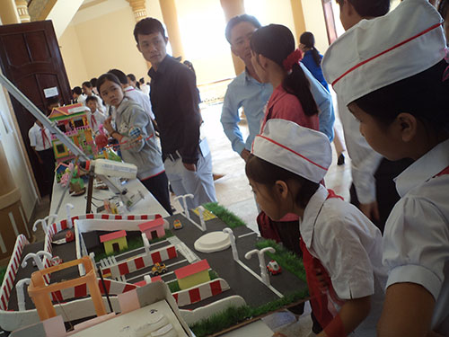

Trao giải 5 đề tài đạt giải cuộc thi sáng tạo thanh thiếu niên nhi đồng quốc gia

Lần cập nhật cuối lúc Thứ sáu, 26 Tháng 9 2014 08:48 Viết bởi Administrator Thứ hai, 15 Tháng 9 2014 08:52
Tại Cuộc thi Sáng tạo thanh thiếu niên nhi đồng toàn quốc lần thứ 10 (2013-2014), qua tuyển chọn, sàng lọc, ban tổ chức đã công bố tổng cộng 105 đề tài/mô hình xuất sắc đoạt giải, bao gồm: 5 giải nhất, 10 giải nhì, 30 giải ba và 60 giải khuyến khích. Quảng Nam có 5 mô hình/giải pháp đạt giải trong cuộc thi lần này.

Theo đó, đề tài/mô hình “Đèn bút trang trí” của tác giả Lê Trung Nguyên (Trường Tiểu học số 1 Duy Phước, Duy Xuyên) được trao giải khuyến khích. Đồng giải ba là 3 đề tài/mô itnbk.edu.vnu có nhịp giữa nâng lên khi có tàu chạy qua” của Phan Văn Đông (Trường THPT Trần Hưng Đạo, Hội An); “Ý thức” của Hồ Văn Ny (Trường THCS Nguyễn Du, Bắc Trà My) và “Hệ thống tưới nước thông minh” của Lê Minh Triết (Trường THPT chuyên Nguyễn Bỉnh Khiêm, TP. Tam Kỳ). Mô hình/tác phẩm “Ống ruben” của Nguyễn Thành Tín - Hà Thị Ánh Tuyết (Trường THPT Nguyễn Bỉnh Khiêm, Tam Kỳ) đoạt giải nhì.
BÍCH LIÊN (baoquangnam.com.vn)
Tin mới hơn:
- 31/01/2015 07:37 - Thứ trưởng Bộ GD-ĐT Nguyễn Vinh Hiển làm việ…
- 26/01/2015 16:59 - Bộ trưởng Bộ GĐ-ĐT chốt 10 điểm về kỳ thi quốc gia
- 11/11/2014 07:22 - Ra quân dọn vệ sinh hưởng ứng ngày Đô thị Việt Nam
- 18/10/2014 07:08 - Sáng tạo trẻ chuyên Nguyễn Bỉnh Khiêm
- 25/09/2014 00:00 - Những người trẻ mê thiên văn học
- itnbk.edu.vn
- 30/08/2014 07:07 - Một lớp có 5 em học sinh đỗ thủ khoa đại học
- 01/04/2014 15:52 - Bộ GD&ĐT vừa công bố lịch thi tốt nghiệp THPT năm …
- 28/03/2014 09:52 - Tam Kỳ - Phú Ninh tổ chức hội thi Khi tôi 18
- 12/02/2014 16:21 - Kỳ thi học sinh giỏi quốc gia năm học 2013 - 2014 …
- 06/02/2014 22:18 - Kỳ tích Võ Quang Hưng